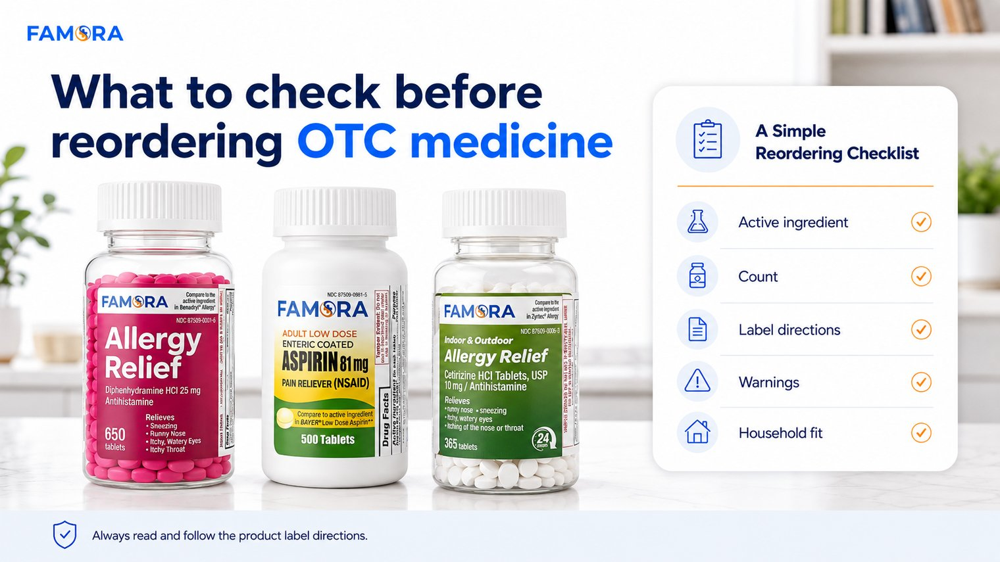

Reordering OTC medicine on Amazon can feel automatic. You run low, search the product category, choose something familiar, and add it to the cart. But when it comes to over the counter medicine, a quick review before checkout can help you make a more informed household decision.
That does not mean overcomplicating the process. It means checking a few practical details before you reorder: the active ingredient, product count, label directions, warnings, household fit, and where the product is available.
For shoppers who already buy allergy relief medicine, antihistamine tablets, low dose aspirin, or other medicine cabinet essentials online, this simple comparison habit can make restocking feel more organized and less reactive.
Famora is built around that kind of practical household thinking: clear OTC essentials, high-count formats, and simple access through Amazon. You can explore the current lineup through Famora while reviewing product details before choosing what fits your household needs. For a closer look at the basics, see how to choose the right Famora OTC essential.
Start With the Active Ingredient
The first thing to check before reordering OTC medicine is the active ingredient. This is the part of the product that tells you what ingredient is responsible for the product’s intended effect.
For example, two products may both sit within the allergy relief category, but they may use different active ingredients. Famora currently offers allergy relief options including Diphenhydramine HCl 25 mg and Cetirizine HCl 10 mg. Both are OTC antihistamine products, but shoppers should still review each label carefully because product details, warnings, directions, and intended use can differ.
This is especially important when browsing Amazon because product titles can look similar across brands. Before choosing an OTC essential, look beyond the front label and review the active ingredient section, the product description, and the Drug Facts information when available.
Check the Count Before You Reorder
Count is another practical detail that matters, especially for households that like to keep everyday OTC essentials stocked.
A smaller bottle may be fine for occasional use, while a high-count format may make more sense for households that want fewer restocking moments. Famora’s current product lineup includes:
- Diphenhydramine HCl 25 mg Allergy Relief — 650 count
- Cetirizine HCl 10 mg 24-Hour Allergy Relief — 365 tablets
- Low Dose Aspirin 81 mg — 500 count
The goal is not just to choose the biggest bottle. The goal is to compare what you are buying, how often your household may need to restock, and whether that product fits your normal medicine cabinet routine.
For many shoppers, “value” is not only about price. It can also mean knowing what is in the bottle, how many tablets or caplets are included, and whether the format is practical for the way the household shops.
Review Label Directions and Warnings
Before buying OTC medicine online, always review the product label directions and warnings. This step matters whether you are buying a product for the first time or reordering something you have purchased before.
Reliable health resources also recommend being thoughtful when using over-the-counter medicines safely, especially when reviewing directions, warnings, and when to ask a healthcare professional.
When shopping on Amazon, look for product images, label views, dosage directions, warnings, age guidance, and any notes about use. If you have questions about whether a product is right for you, consult a healthcare professional.
This is not a step to skip just because the product is familiar. Labels can include important information about who should use the product, how it should be used, when to avoid it, and when to ask a doctor or pharmacist.
Think About Household Fit
A product can be popular and still not be the right fit for every household. Before reordering OTC essentials, ask a simple question: does this product fit what your household actually needs?
For allergy relief medicine, that may mean comparing active ingredients, symptom language, product count, and whether the product is positioned as a 24-hour allergy relief option. For adult pain relief, it may mean checking whether the product is intended for adults and reviewing the label directions carefully.
Household fit also includes how your medicine cabinet is organized. If products are hard to find, expired, or scattered in multiple places, reordering can become guesswork. A simple cabinet check before buying can help you avoid duplicating items you already have or forgetting essentials that are running low.
Compare Amazon Product Details Before Checkout
When buying OTC medicine online, the Amazon product page can help you compare important information before checkout. Instead of only looking at the product image or price, review the basics:
- Active ingredient
- Product count
- Drug Facts and label directions
- Warnings and age guidance
- Product category
- Customer-facing product description
- Brand storefront or seller information
This is where a smart shopper mindset helps. If you are already buying OTC medicine on Amazon, take a minute to compare the product details before reordering. A familiar product category does not always mean every product is the same.
Famora’s approach is simple: keep the product lineup clear, make the counts easy to understand, and guide shoppers toward practical OTC essentials for everyday household care.
Why Famora Fits the Smart Shopper Mindset
Famora is positioned for households that want straightforward OTC products without overcomplicating everyday care. The brand focuses on familiar categories, high-count formats, and clear product information.
That matters because many shoppers are not looking for a complicated medical explanation when they reorder. They want to understand what the product is, what active ingredient it uses, how many tablets or caplets are included, and how to review the label before use.
Famora’s current lineup supports that practical approach across allergy relief and adult pain relief categories. The brand does not need to overstate the promise. The value is in clear product details, practical counts, and responsible OTC use.
A Simple Reordering Checklist
Before you reorder OTC essentials on Amazon, use this quick checklist:
- Check the active ingredient.
- Confirm the product count.
- Review label directions.
- Read warnings and age guidance.
- Compare the product details on Amazon.
- Think about whether it fits your household needs.
- Always use the product as directed.
A few minutes of review can make the purchase feel more intentional. It can also help keep your home medicine cabinet stocked with products that match your household’s real needs.

A simple checklist to review before reordering OTC essentials online.
Questions and Answers
Check the active ingredient, count, label directions, warnings, age guidance, and product details before placing an order.
The active ingredient helps explain what the product is designed to do. Similar product names can have different ingredients, so always review the label.
Not always. High-count formats can be practical for prepared households, but the right choice depends on the product, label directions, and household needs.
Yes. Famora products are available through Amazon, and the current lineup can be reviewed through Famora’s website and Amazon product listings.
Yes. Always read and follow the product label directions before use, even if the product is familiar.
This content is for general educational purposes only and is not medical advice. Always read and follow product label directions.